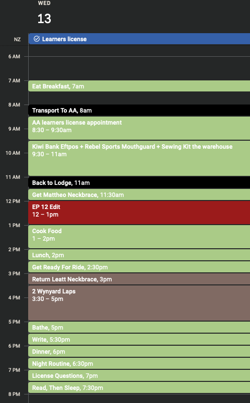

2023-09-12
11th September 2023: I’m Slipping Up Hard
Today I almost procrastinated a ride. That is what it has come to.
I have spent most of my day on my phone watching MTB YouTube. Its almost porn. I am not there yet. I am not the one floating over rocks, but I see others and get happy. No Longer.
I have been eating too much, I can see the accumulation of fat arounf my waste.
Lower carbs. that looks like: Max 2 bowls of oats in the morning. Lunch - right now, 1 can baked beans and 100g rice. Dinner: A lot of meat and greens, only a fistful of carbs.
This is my simple meal plan for the day ahead.
I am also hard dopamine detoxing again - no videos, only podcasts. Phone usage way down. Learning to be bored again.
Routine: Ride 2x a day - I am thinking 2 laps of Wynyard DH before breakfast and then 2 round after lunch again. I will do 2 laps after lunch tomorrow, as I have to go the DMV equivalent to book an test appointment for NZ learners license. Editing - Finish the Indian videos, which is last 2 ride and coming to QT vid, if there is enough footie to make that. Regular documentation - Daily blog or unfiltered video.
So main things: Ride and edit. work when shift is available. 30 mins a day license theory practice and 30 mins of writing for blog.
I will put strava in the blog for proof.
I also want to wake at 5. I will work my way up.
I have also figured out that because I was not having lunch, I was being a layman. I found 10 cans of baked beans for free, which will roughly equate to a week worth of food. So that is sort.
I tried a neck brace I found on marketplace, did not work. I could not look ahead while wearing that thing. I have messaged a friend that is selling his old neck brace as well and will pick it up tomorrow, and test it out.
To do for tomorrow: Buy MouthGuard Fill license conversion form Cook Lunch 400g rice 4 baked beans Kiwi bank eftpos 2 laps wynyard DH EP 12 Edit

I also took 5 mins 41 secs to do 1 run of Wynyard DH. Too slow. Pros could do that in 1. I have to get 6 times faster. I want to finish in 3 minutes by the end of the year.
I was starting to get complacent because of my progress on Mini Dream. Being shit at descending has taken it away. I am letting Mini Dream go because of the rains. The jumps are slow right now.
I also went over my Wynyard run, and my line choice was shit, found some better lines pausing and reviewing footage. I just have to remember them now.
I also realise that work at the job I found may not be as plentiful as I’d like. I seem to be like a backup type person, where they only notify me if shifts are available, rather than, these shifts are available for this week, when are you available? It is more of a ‘we need you at X place at X time. Are you available?’
I also need to drink more water. I am filling up my bottles now.
Bottles have been filled. that is it for today I think.
I am grateful for Oliver for finding out where I can buy mouthguard, for mom her emo and financial support, my father’s funding, and all the influencers that made me, and Vivek and siddha, for always inspiring to getting me back to writing/journalling. I have reached a point where I do not need to journal regularly, but it always helps.